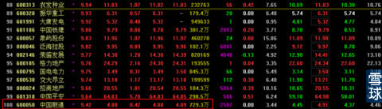
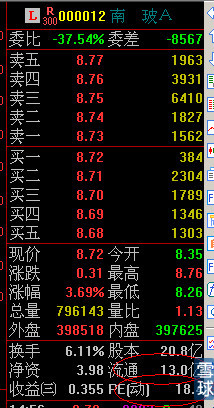
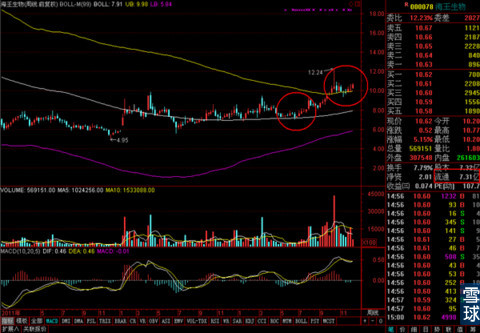
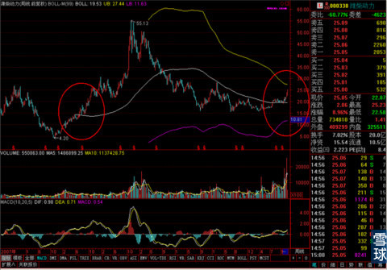
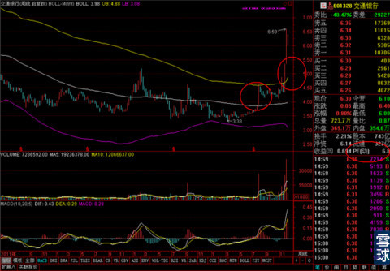

这是市场风格从利用金融三剑客快速拉抬指数向着合理的估值回归行情的一次转变，这种转变的有效性和持续性有待观察，但是部分的证实了之前我们通过对历次牛市总结得出的小盘低价——中盘绩优——大盘蓝筹——超大盘权重这个上涨顺序。而且今天的大盘走势虽然尾盘报收的点位是喜人的，但是早盘严重低开和震荡清洗的迹象极为明显，这个过程还可能持续相当长的一段时间。
昨天晚上我在番外篇里大概说了一下整个12月份，从资金到技术的一些可能出现的情况。元旦之前的行情可能不会一直持续现在这样的火爆。年底是否钱荒，快速的上涨之后怎么进行回调都是很值得关注的问题。
今天晚上我有点事，所以就不展开多写了，着重说一下大家最关心的还有那些股票可以建仓的问题。
周四晚上到周五上午，看到大盘的一些隐忧和剧烈波动之后，我按代码顺序理了一遍沪市股票的情况，发现还有很多比较稳健值得关注的股票，这些股票都突破了关键性的压力位进入了相对强势的区域，差得就是大盘风格切换到它们身上，拉起一波上涨。
新加入自选股的股票如下，
其中两面针是知乎上一位小伙伴发现的，他私信我说对这个股票的走势比较有信心，想知道我的看法，我看了之后感觉还不错，回复他积极关注的同时我自己也加了自选股。
后面的6只都是在周五午间收盘之前选定的，今天的走势验证了之前的选择。
其中，我在雪球上就调低了交通银行的资金量，空出的部分就选择持有了南玻A，实盘上，周五和今天两笔减持商品B，所得现金也是买入了一点南玻A和海王生物。
我们可以看一下南玻A的周线走势，

走得非常的扎实和稳健，和南山铝业已经交通银行上涨之前的准备阶段走势非常一致。

业绩上很不错，流通股本也相对较小。所以是为了迎接可能到了的调整和风格切换的一个很好的防御性选择。

海王生物，业绩稍差，但是盘面更小，加上大盘调整期往往是医药板块抗跌和上涨的事情，同时历史走势有过很惊艳的时候，很值得关注。

潍柴动力，业绩好到爆，现在的走势和历史上突破大涨前的走势极其接近，我都有点后悔周五没选择买入它而是拿了南玻A。
最后给大家看一下交通银行的走势，和前面几只提到的对比一下，大家就会明白现阶段选股的主要标准了。

对比一下位置关系，大家就会明白，现在A股市场里有大量的启动迹象有了，但是暂时没有爆发上涨的股票，早前进场的可以继续持有观望，后来的何苦体现吊胆的去追近期暴涨的股票，像我们之前稳稳当当的埋伏进这些有潜质的股票里耐心等一等不就好了么！
文中所提到的股票大家可以加入自选股观察，有可能出现大盘调整的时候它们回踩的周线级别的重要支撑线上的情况，如果要近期买入请仔细考虑买卖点和止损位等。
暂时先这样，刚刚有小伙伴问我关于分级基金的问题，这个我自己操作的很多，最近也是市场热点，其原理和交易的一些情况在这个答案里有
银华稳进和银华锐进，这两只基金是否可以通过证券交易系统单独购买和赎回？ - 金融
大家有兴趣就去看看吧，有没赶上昨天更新的，可以去看看昨天专栏里关于12月可能出现的一些情况的那篇，如果出现了心里也好有个数。